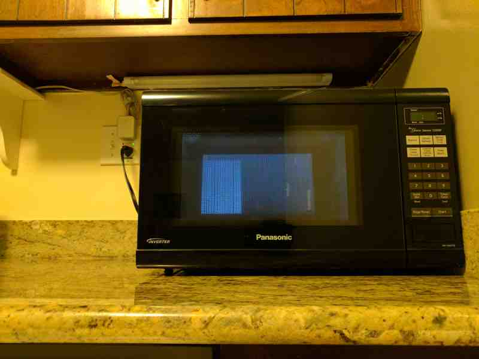

Raspberry Pi on Project Fi#
This guide will go over how to get a Raspberry Pi (or really any Linux system) on Google’s Project Fi cellular service. If you already use Project Fi as your main cellphone service provider then you can use their data only SIM cards to get your Raspberry Pi online for relatively cheap depending on your use case.
{kind=link}
{kind=link}
I was able to power the 3G modem directly from the USB port on my Pi Zero. You’ll probably need a good USB power supply to power everything.
I’ll be covering a couple of different ways to get all of this working. You will need:
Raspberry Pi running Raspbian (I used a Pi Zero version 1.3).
Project Fi data only SIM card (I’ve previously activated mine on a Nexus 5).
T-Mobile locked or unlocked USB 3G modem (I used a Jet 2.0 HSPA+ USB stick).
Note
The Jet 2.0 is basically a Huawei UMG366, similar to the Huawei E366 modem. I’m only able to get EDGE speeds on it (both on Linux and on a Windows XP laptop with T-Mobile software) so I wouldn’t recommend getting it.
Installing on Linux#
The first step is getting the OS to recognize the modem. There is a problem with some 3G USB modems in that they simulate a virtual CD-ROM drive (ZeroCD mode). This drive has drivers and software needed by Windows and OS X to control the modem, and once installed and running that software takes care of switching the device into modem mode. However this trick doesn’t work well on Linux since we don’t (and can’t) use that software to do the switch. So we only see the virtual CD-ROM drive (or SD card if it has one) and not the modem.
You can see this for yourself: plug in the modem into a USB port on the Raspberry Pi and run lsusb. You should see
something like this:
pi@raspberrypi:~ $ lsusb |grep Huawei
Bus 001 Device 007: ID 12d1:1446 Huawei Technologies Co., Ltd. E1552/E1800/E173 (HSPA modem)
The above is NOT what we want. Even though it says “HSPA modem” it is in fact in ZeroCD mode. You won’t have wwan0
in ifconfig and you won’t see any /dev/ttyUSB* devices.
Tip
If you do see wwan0 in ifconfig or have /dev/ttyUSB* devices then you can probably skip following
sub-sections and head on over to the Dialing section below. On Raspbian Lite I had to use usb_modeswitch but on
Raspbian with PIXEL I didn’t need it.
There are two solutions to this: using USB Mode Switch software to switch to modem mode on Linux or the “software-free” Permanent Modem Mode approach. I’ll explain both below:
USB Mode Switch#
A very common and safe solution is to use usb_modeswitch. Luckily it comes pre-installed on Raspbian. If for some
reason you don’t have it you can just run sudo apt-get install usb-modeswitch.
First cherry pick the correct file from configPack.tar.gz and put it in /etc/usb_modeswitch.d. Remember that if you had
something other than “12d1:1446” in your lsusb output you’ll want to use that device ID instead in the command
below.
cd /etc/usb_modeswitch.d/
sudo tar -xzvf /usr/share/usb_modeswitch/configPack.tar.gz "12d1:1446"
Now we need to open /etc/usb_modeswitch.d/12d1:1446 in a text editor and put “DefaultVendor=0x12d1” and
“DefaultProduct=0x1446” at the top. It’ll end up looking something like this:
DefaultVendor=0x12d1
DefaultProduct=0x1446
# Huawei, newer modems, and rebrandings
TargetVendor=0x12d1
TargetProductList="1001,1404,1406,140b,140c,1412,1417,141b,1429,1432,1433,1436,14ac,1506,150c,1511"
HuaweiNewMode=1
Now we can test it:
pi@raspberrypi:~ $ sudo usb_modeswitch -c /etc/usb_modeswitch.d/12d1:1446
Look for target devices ...
No devices in target mode or class found
Look for default devices ...
product ID matched
Found devices in default mode (1)
Access device 014 on bus 001
Current configuration number is 1
Use interface number 0
Use endpoints 0x01 (out) and 0x81 (in)
USB description data (for identification)
-------------------------
Manufacturer: Huawei Technologies
Product: HUAWEI Mobile
Serial No.: not provided
-------------------------
Using standard Huawei switching message
Looking for active driver ...
OK, driver detached
Set up interface 0
Use endpoint 0x01 for message sending ...
Trying to send message 1 to endpoint 0x01 ...
OK, message successfully sent
Reset response endpoint 0x81
Could not reset endpoint (probably harmless): -99
Reset message endpoint 0x01
Could not reset endpoint (probably harmless): -99
-> Run lsusb to note any changes. Bye!
And now we’ve got wwan0 and /dev/ttyUSB* files:
pi@raspberrypi:~ $ ifconfig wwan0
wwan0 Link encap:Ethernet HWaddr a2:6e:8e:8e:6e:a2
inet addr:169.254.198.80 Bcast:169.254.255.255 Mask:255.255.0.0
inet6 addr: fe80::e30f:63c4:d2f4:52c2/64 Scope:Link
UP BROADCAST RUNNING MULTICAST MTU:1500 Metric:1
RX packets:0 errors:0 dropped:0 overruns:0 frame:0
TX packets:41 errors:0 dropped:0 overruns:0 carrier:0
collisions:0 txqueuelen:1000
RX bytes:0 (0.0 B) TX bytes:8393 (8.1 KiB)
pi@raspberrypi:~ $ ls /dev/ttyUSB*
/dev/ttyUSB0 /dev/ttyUSB1 /dev/ttyUSB2
If you don’t see wwan0 but do see ttyUSB* files then you should be fine. WvDial only needs those ttyUSB* files.
Permanent Modem Mode#
This is a more risky yet robust solution. Unfortunately in my experience usb_modeswitch wasn’t very reliable between
reboots. I kept having to run the sudo usb_modeswitch command to manually do the switch to modem mode. Since I plan
on keeping my Raspberry Pi unattended for weeks/months at a time I can’t be there to do the mode switch myself, nor do
I want to setup an ugly cronjob to do it (feels like a band-aid solution to me).
There is a way to disable this “switch” feature on my 3G modem using the SETPORT AT command (other Huawei modems
support the U2DIAG AT command but mine didn’t seem to have it). You can always reverse this change if you keep the
original values written down somewhere.
Warning
Be VERY careful with the SETPORT command. If you omit one of the modes you could accidentally lock yourself out of the modem forever (e.g. excluding PCUI mode may cause /dev/ttyUSB0 to never come back).
We’ll need to issue AT commands to the modem. I’ll be using screen. You’ll need to have the /dev/ttyUSB0 file
present so if you don’t have it you’ll need to run through the USB Mode Switch section or run
sudo sg_raw /dev/sr0 11 06 20 00 00 00 00 00 01 00 to temporarily switch to the modem.
sudo apt-get install screen
screen /dev/ttyUSB0
# Test by typing "AT" (without quotes) and pressing enter. It should reply "OK".
Tip
Exit screen with ctrl+a and then press k.
First get the current settings from the modem (AT^SETPORT?) and also what values correspond to which settings (AT^SETPORT=?):
AT^SETPORT?
A1,A2:1,2,3,7,A1,A2
OK
AT^SETPORT=?
1:MODEM
2:PCUI
3:DIAG
4:PCSC
5:GPS
6:GPS CONTROL
7:NDIS
A:BLUE TOOTH
B:FINGER PRINT
D:MMS
E:PC VOICE
A1:CDROM
A2:SD
OK
Values before the colon are initial modes and values after the colon are post-switch modes. As you can see only the CDROM and SD card modes are enabled by default until usb_modeswitch is run, which then includes the modem. We can use the undocumented “FF” mode as a noop to just disable the special “initial” mode and always start off with the modem.
AT^SETPORT="FF;1,2,3,7"
OK
AT^SETPORT?
ff:1,2,3,7
OK
Exit screen, pull out the modem, and plug it back in. You should get wwan0 instantly.
Dialing#
You may currently have wwan0 present, but it doesn’t have a public IP address (you’ll have a link-local address instead). We’ll need to issue “dial” commands to the modem to get it connected (just like the old 56k days!). I’ve found a couple of different ways to do this: the “easy” software-ppp approach WvDial and the Huawei-specific (but still safe) non-ppp approach NDISDUP.
WvDial#
wvdial should theoretically handle auto-redialing on disconnect and other edge-cases, though I haven’t tested it.
We’ll have it dial up with the Project Fi APN h2g2. Other cellular providers require a username and password to dial
but Project Fi doesn’t need that.
First install wvdial:
sudo apt-get install wvdial
Then open /etc/wvdial.conf and make it look like this:
[Dialer Defaults]
Init1 = ATZ
Init2 = ATQ0 V1 E1 S0=0 &C1 &D2 +FCLASS=0
Init3 = AT+CGDCONT=1,"IP","h2g2"
Modem Type = Analog Modem
Baud = 460800
New PPPD = yes
Modem = /dev/ttyUSB0
ISDN = 0
Phone = *99#
Password = { }
Username = { }
Stupid Mode = 1
Now dial into to Project Fi. You should see something like this:
Note
vwdial will hang at the end if it works. When you ctrl+c it will hang up the modem. This is fine for now. On
success you will also see a new interface ppp0 whilst wwan0 keeps its current useless IP.
pi@raspberrypi:~ $ sudo wvdial defaults
--> WvDial: Internet dialer version 1.61
--> Initializing modem.
--> Sending: ATZ
ATZ
OK
--> Sending: ATQ0 V1 E1 S0=0 &C1 &D2 +FCLASS=0
ATQ0 V1 E1 S0=0 &C1 &D2 +FCLASS=0
OK
--> Sending: AT+CGDCONT=1,"IP","h2g2"
AT+CGDCONT=1,"IP","h2g2"
OK
--> Modem initialized.
--> Sending: ATDT*99#
--> Waiting for carrier.
ATDT*99#
CONNECT
--> Carrier detected. Starting PPP immediately.
--> Starting pppd at Fri Dec 2 20:43:24 2016
--> Pid of pppd: 3600
--> Using interface ppp0
--> pppd: 8??[01]p??[01]h??[01]
--> pppd: 8??[01]p??[01]h??[01]
--> pppd: 8??[01]p??[01]h??[01]
--> pppd: 8??[01]p??[01]h??[01]
--> pppd: 8??[01]p??[01]h??[01]
--> pppd: 8??[01]p??[01]h??[01]
--> local IP address 25.9.82.116
--> pppd: 8??[01]p??[01]h??[01]
--> remote IP address 10.64.64.64
--> pppd: 8??[01]p??[01]h??[01]
--> primary DNS address 10.177.0.34
--> pppd: 8??[01]p??[01]h??[01]
--> secondary DNS address 10.177.0.210
--> pppd: 8??[01]p??[01]h??[01]
Once it hangs with no errors you can open another terminal (or re-run wvdial in the background) and ping out:
pi@raspberrypi:~ $ ping -I ppp0 4.2.2.1
PING 4.2.2.1 (4.2.2.1) from 33.250.225.165 ppp0: 56(84) bytes of data.
64 bytes from 4.2.2.1: icmp_seq=1 ttl=55 time=961 ms
64 bytes from 4.2.2.1: icmp_seq=2 ttl=55 time=603 ms
64 bytes from 4.2.2.1: icmp_seq=3 ttl=55 time=341 ms
64 bytes from 4.2.2.1: icmp_seq=4 ttl=55 time=221 ms
^C
--- 4.2.2.1 ping statistics ---
4 packets transmitted, 4 received, 0% packet loss, time 3001ms
rtt min/avg/max/mdev = 221.998/532.237/961.983/283.804 ms
pi@raspberrypi:~ $
It is pretty slow though (I get around 15 KiB/s). Good enough for my use case however.
{kind=link}
{kind=link}
NDISDUP#
There is a way to skip needing wvdial altogether and let the modem handle it for us. Apparently though this only
works for Huawei modems (lucky for me). This isn’t a permanent solution so we’ll be automatically running this every
time the wwan0 interface is brought up.
If you read through the WvDial section, you’ll notice that network traffic goes through ppp0 instead of wwan0
and indeed wwan0 is never even used. It looks like wwan0 is a virtual NDIS ethernet adapter that the modem provides, yet
is usually unused. We’ll be using it here.
Before making changes lets try manually enabling it. Log into the serial console with a tty program (I’ll be using
screen):
sudo apt-get install screen
screen /dev/ttyUSB0
# Test by typing "AT" (without quotes) and pressing enter. It should reply "OK".
Tip
Exit screen with ctrl+a and then press k.
Now issue the NDISDUP AT command (h2g2 is the Project Fi APN):
AT^NDISDUP=1,1,"h2g2"
OK
Now run the DHCP client to get an IP address:
pi@raspberrypi:~ $ sudo dhclient -v wwan0
Internet Systems Consortium DHCP Client 4.3.1
Copyright 2004-2014 Internet Systems Consortium.
All rights reserved.
For info, please visit https://www.isc.org/software/dhcp/
Listening on LPF/wwan0/f6:0a:21:71:c9:56
Sending on LPF/wwan0/f6:0a:21:71:c9:56
Sending on Socket/fallback
DHCPDISCOVER on wwan0 to 255.255.255.255 port 67 interval 8
DHCPREQUEST on wwan0 to 255.255.255.255 port 67
DHCPOFFER from 25.39.9.157
DHCPACK from 25.39.9.157
bound to 25.39.9.158 -- renewal in 3110 seconds.
You should have internet access now. To automate all of this we can create a pre-up rule for the network interface.
We’ll need the qmicli utility to check if we have cell service before trying to dial in with NDISDUP. It’ll also be
easier to use than issuing AT command with echo and not being able to find out if the command failed or succeeded.
Install it with sudo apt-get install libqmi-utils. Edit /etc/network/interfaces.d/wwan0 with the following file
contents:
allow-hotplug wwan0
iface wwan0 inet dhcp
pre-up for _ in $(seq 1 10); do /usr/bin/test -c /dev/cdc-wdm0 && break; /bin/sleep 1; done
pre-up for _ in $(seq 1 10); do /usr/bin/qmicli -d /dev/cdc-wdm0 --nas-get-signal-strength && break; /bin/sleep 1; done
pre-up APN=h2g2 /usr/bin/qmi-network /dev/cdc-wdm0 start
post-down /usr/bin/qmi-network /dev/cdc-wdm0 stop
Now run the following to test:
sudo ifup wwan0 # Needed for ifdown to work.
sudo ifdown wwan0
sudo ifup wwan0
You should still have network access. Reboot to make sure it works. Unplug and plug back in while the system is running.
If it still re-connects just fine feel free to uninstall wvdial if you’ve previously installed it.
Tip
If the modem doesn’t auto-connect on boot but does after ifup try editing /etc/network/interfaces and
changing source-directory /etc/network/interfaces.d to source /etc/network/interfaces.d/*.
In my experience this setup seems pretty robust. I tried different reboot/power cycle/unplug/replug scenarios and I even placed my Raspberry Pi in my microwave (poor-man’s grounded faraday cage) to block out cellular signals for a few minutes. Every time the Raspberry Pi managed to re-connect automatically.
{kind=link}
References#
https://www.instructables.com/id/Raspberry-Pi-as-a-3g-Huawei-E303-wireless-Edima/
http://www.frank-d.info/cellular-backup-again-via-googles-project-fi-a-cisco-3825-and-an-hwic-3g-gsm
http://blog.yolo.pro/permanently-disable-mode-switching-on-huawei-e3372s/
https://lists.freedesktop.org/archives/modemmanager-devel/2014-December/001706.html
Comments
comments powered by Disqus